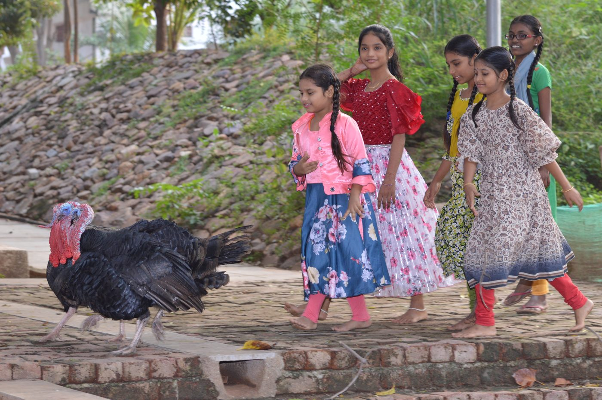
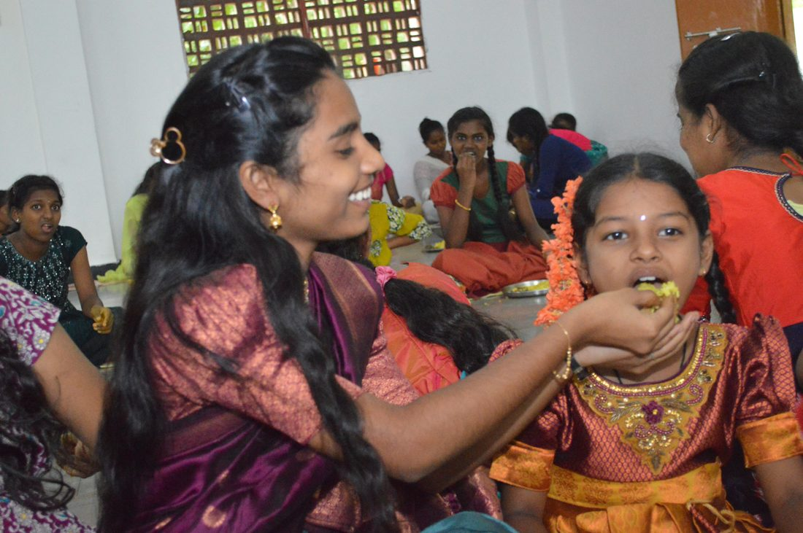
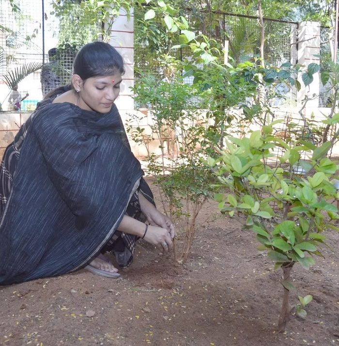

Care: the heart of Aarti
Some children live with us at Aarti Village. Others stay with their own families and we support them there. Either way, nobody is left to manage on their own.
Sponsor a Child
Three decades of care
home since 1992
Village today
Family Based Care
interventions

Aarti Village
145 girls, and a house mother for every cottage
Aarti Village is home to 145 girls. Most were orphaned or came to us out of abusive households. They live in small cottages on a green campus, a handful of girls to each one, with a house mother of their own.
They have grown up to be nurses, engineers, artists and mothers. They still come back for birthdays and weddings, which tells us more than any of our own reporting does.
Bhanu’s story

Bhanu's uncle brought her to Aarti Home when she was two, after her mother was killed.
School was hard going at first and she was some way behind. She has since taken to biology, and she wants to be a doctor.
Family Based Care
Keeping children at home where home can be made to work
Not every child who needs help needs taking away from home. Plenty are living with their families and still at risk of being married off early, sent out to work, or neglected because there is no money.
Family Based Care started in 2018 to cover the things that make the difference in those households: school costs, food, whatever the week requires. Our social workers keep visiting, which matters as much as the money does. The programme works through five stages aimed at the pattern underneath it all, usually some combination of hunger, violence and drink.
Life at Aarti Village
It is a house full of children, not an institution, and it sounds like one.
Always Being There
Girls who grow up and leave are still on the list. Aarti is where they come back to, in good times and bad.
Healthcare
Many of our committee members are local doctors, available at any time, and an in-house psychologist provides ongoing counselling for children who have been through trauma.
Daily Life
Someone is on duty at all hours. The day starts with yoga in the garden, evenings are for homework, and weekends go on films, books and games.
Bonding with the Children
Every child arrives with a different history, so the care has to be different too. Some need help putting bad memories down. New arrivals mostly need to work out that they can stay.
Give a child a home
Your support pays for a bed, a doctor, and people who will notice when a child is struggling.
Sponsor a Child ↗